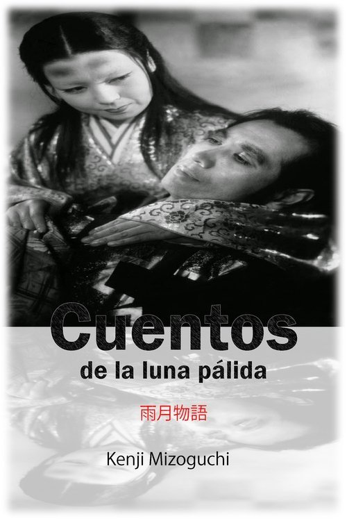

Cuentos de la luna pálida (1953)
Sinopsis Rápida
En el Japón feudal, la codicia y la ambición desatan una espiral de violencia y consecuencias devastadoras cuando dos campesinos se ven envueltos en un conflicto que pone a prueba su moral y sus vidas.
Sinopsis Detallada
Ambientada en el Japón del siglo XVI, "Cuentos de la luna pálida" sigue a Genjuro y Tobei, dos campesinos que, ignorando las advertencias de un sabio, se aventuran a vender sus mercancías a soldados en medio de una guerra. Su búsqueda de riqueza, impulsada por la ambición de Genjuro y el anhelo de Tobei por ascender socialmente, se entrelaza con la enigmática Lady Wakasa. Las decisiones que toman, teñidas por la avaricia y el deseo, tendrán consecuencias desgarradoras para ellos y sus familias, pintando un crudo retrato de la ambición y sus trágicos desenlaces. La película explora temas de moralidad, las consecuencias de la guerra y la fragilidad de la vida en un mundo implacable.
¿Por qué tenés que verla?
{{PUNTOS_CLAVE}}Idea Extra
Análisis comparativo con otras películas de drama histórico japonés de la misma época, explorando las similitudes y diferencias en la narrativa y la estética visual.
{{CONTENIDO_RELACIONADO}}